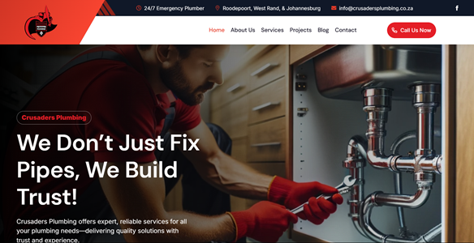

Zach Oliver's Resume
Summary
I am a passionate and self-driven full-stack developer
student currently completing The Complete Full-Stack
Development Bootcamp. With a strong foundation in
The Web Design industry, creating cutting edge websites
using wordpress and elementor for a year and now I
have a hunger to grow in frontend and backend
technologies, building real-world projects that
are code based, to sharpen my skills in the tech career.
Education
Work Expereience
Junior Freelance Developer (Learning Phase), Self-Employed
- Completing real-world capstone projects using HTML, CSS,
and JavaScript.
- Building coding proficiency to complement existing design
and business skills.
- Learning Git, Node.js, Express, PostgreSQL, React, and Web3 tools.
Co Founder & Web Designer - The Digital Revolution (Cape Town)
- Built custom websites for clients using WordPress and Elementor.
- Handled client communication, proposal writing, and project management.
- Designed marketing funnels and landing pages focused on conversions.
- Created and managed Google Ads and Facebook ad campaigns.
- Applied UI/UX principles to create intuitive and engaging designs.
- Optimized websites for SEO and local visibility.
Skills
- Web Development: HTML5, CSS3, JavaScript, WordPress, Elementor
- Design: UI/UX, Responsive Design, Branding, Web Design Principles
- Tools: Git, GitHub, Bash CLI, Figma, Canva, Visual Studio Code
- Business Development, Client Management, Strategic Thinking
- Learning (Bootcamp): Node.js, Express, React.js, APIs, PostgreSQL, Web3, NFT Contracts
- SEO & Marketing: On-Page SEO, Google Ads, Facebook Campaigns, Conversion Copywriting
Certifications & Achievements
- Completed: HTML Section - The Complete Full-Stack Development Bootcamp
- Currently learning full-stack and blockchain development (est. completion 2025)
- Built a client base from scratch through organic marketing and referrals
- Ran multiple successful Google and Facebook Ad campaigns
- Designed entire branding packages and funnels for clients
- Founded my own agency: The Digital Revolution (2024)
- Built 20+ live websites using WordPress & Elementor
One of My Finest Work:
